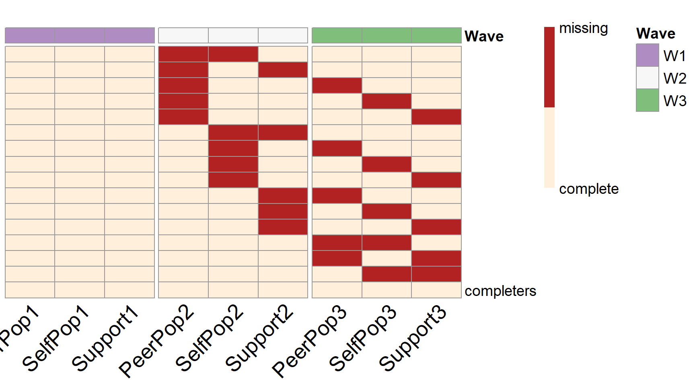

Item-level PHPM Designs (Balanced Design)
Yi Feng & Gregory R. Hancock
Source:vignettes/Item-Level-PHPM.Rmd
Item-Level-PHPM.RmdIntroduction
In this vignette we will introduce the item-level PHPM designs. Different from wave-level PHPM designs, in item-level PHPM designs, the missingness is imposed at the item(or indicator) level. In this type of designs, subjects can be assigned to participate in a specific wave of data collection; but they may be assigned to only provide data on certain measures rather than all the repeated measures.
Compared to wave-level PHPM designs, item-level PHPM designs offer more flexibility. They especially worth consideration when there is a unit cost associated with each observed measurement.
The one potential limitation with balanced item-level PHPM dsigns is that it may result in a large number of missing data patterns. It may be difficult when only a few participants are assigned to each of the missing data patterns. It will also become infeasible to implement when the sample size is smaller than the number of unique missing data patterns.
Search for balanced item-level PHPM designs
To search for item-level PHPM designs using simPM, we only need to specify the methods = "item" argument when using the simPM() function.
Example
In this hypothetical example, Suppose a group of researchers is interested in examining the longitudinal reciprocal relations between peer relationships and teacher-child relationships. They have been funded for a longitudinal panel study following 1000 children for three years. Each year they would collect data on three measures: two measures of peer relationships (self-perceived popularity and peer-perceived popularity) and one measure of teacher-child relationships (teacher-child support). Upon the completion of data collection, they plan to fit an autoregressive cross-lagged model shown below. The parameter of focal interest to the researchers are the cross-lagged path coefficients predicting the peer-perceived popularity from the self-perceived popularity measured at the previous time point, as well as in the cross-lagged paths predicting teacher-child support from the peer-perceived popularity measured at the previous time point (marked in red).
Unfortunately, after the first wave of data collection, the funding agency announces a 30% reduction in the remaining funding. The researcher wishes to continue the project under the budget constraint, with the hope to not compromise the scientific rigor and statistical power. The reseacher thus decideds to use simPM to find a design that yields sufficient power but costs no more than the reduced budget.

An autoregressive and cross-lagged model
After supplying the population model and the analysis model, we can use the simPM() function to search for an optimal item-level missing design with the methods = "item" argument. For more details about the specification of other arguments, please refer to this vignette.
popModel <- [1050 chars quoted with ''']
analyzeModel <- ' #----------- path coefficients ------------# SelfPop2~SelfPop1+PeerPop1 SelfPop3~SelfPop2+PeerPop2 PeerPop2~SelfPop1+PeerPop1+Support1 PeerPop3~SelfPop2+PeerPop2+Support2 Support2~Support1+PeerPop1 Support3~Support2+PeerPop2 #----------- residual covariance ----------# PeerPop1~~SelfPop1+Support1 SelfPop1~~Support1 PeerPop2~~SelfPop2+Support2 SelfPop2~~Support2 PeerPop3~~SelfPop3+Support3 SelfPop3~~Support3 #---------------- means -------------------# PeerPop1~1 SelfPop1~1 Support1~1 PeerPop2~1 SelfPop2~1 Support2~1 PeerPop3~1 SelfPop3~1 Support3~1 #--------------- variances ----------------# PeerPop1~~PeerPop1 SelfPop1~~SelfPop1 Support1~~Support1 PeerPop2~~PeerPop2 SelfPop2~~SelfPop2 Support2~~Support2 PeerPop3~~PeerPop3 SelfPop3~~SelfPop3 Support3~~Support3 '
item.ex3 <- simPM( popModel, analyzeModel, VarNAMES=c("PeerPop1","SelfPop1","Support1","PeerPop2","SelfPop2","Support2","PeerPop3","SelfPop3","Support3"), distal.var = NULL, n=1000, nreps=10, seed=12345, Time=3, k=3, Time.complete=1, costmx=c(5,5,5,10,10,10), pc=0.1, pd=0, focal.param=c("PeerPop2~SelfPop1","Support2~PeerPop1","PeerPop3~SelfPop2","Support3~PeerPop2"), eval.budget=T, rm.budget=31500L, # remaining available budget 45*1000*0.7 complete.var=NULL, engine="l", methods="item" )
By running the code above, simPM will map out the possible item-level PHPM designs and determine whether the cost of each design is within the remaining budget limit. Please note that when we specify methods = "item", simPM() will only map out the balanced item-level PHPM designs. They are balanced in the sense that each missing data pattern has the same number of missing observed measurements. For more information about imbalanced item-level PHPM designs, please refer to forward assembly.
The program will run Monte Carlo simulations for the plausible designs that cost less than the remaining amount of funding. Comparisons are made among the plausible designs. The design that yields higher empirical statistical power with regard to the focal parameters will be selected as the optimal balanced item-level PHPM design.
In this example, given the budget constraints, there are four plausible balanced item-level PHPM designs. The program thus has run simulations for all the four plausible designs and made comparisons across the designs. The optimal design among the 4 balanced item-level missing designs will cost $31,500, which is below the reduced available budget.
From the output, we can see that 10% of the participants are assigned to provide complete data across all the future waves of data collection. The rest 90% of the participants are randomly assigned to one of the 15 unique missing data patterns (\(n=60\) in each pattern). In each missing data pattern, the participants are assigned to miss two observed indicators (items) in the future waves of data collection (e.g., self-perceived popularity at wave 2 and peer-perceived popularity at wave 3).
Over 1000 replications, this design yields an empirical power of 0.786 for testing the path coefficient \(b_{PS_1}\), 0.721 for testing the path coefficient \(b_{PS_2}\), 0.917 for testing the path coefficient \(b_{TS_1}\), and 0.890 for testing the path coefficient \(b_{TS_2}\).
summary(item.ex3) #> [1] "=================results summary================" #> convergence.rate weakest.param.name weakest.para.power cost.design #> 1 1 PeerPop3~SelfPop2 0.721 31500 #> 2 1 PeerPop3~SelfPop2 0.523 24750 #> 3 1 PeerPop3~SelfPop2 0.361 18000 #> 4 1 PeerPop3~SelfPop2 0.257 11250 #> miss.point #> 1 2 #> 2 3 #> 3 4 #> 4 5 #> [1] "=================Optimal design=================" #> convergence.rate weakest.param.name weakest.para.power cost.design #> 1 1 PeerPop3~SelfPop2 0.721 31500 #> miss.point #> 1 2 #> [1] "=================Optimal design for focal parameters=================" #> Estimate Average Estimate SD Average SE #> PeerPop2~SelfPop1 0.05055570 0.01874772 0.01847418 #> Support2~PeerPop1 0.12345953 0.03710990 0.03693612 #> PeerPop3~SelfPop2 0.05675102 0.02228946 0.02215252 #> Support3~PeerPop2 0.13073982 0.04158240 0.04079068 #> Power (Not equal 0) Std Est Std Est SD Std Ave SE #> PeerPop2~SelfPop1 0.786 0.07640485 0.02824061 0.02788479 #> Support2~PeerPop1 0.917 0.10985168 0.03249985 0.03269727 #> PeerPop3~SelfPop2 0.721 0.08639815 0.03395195 0.03365353 #> Support3~PeerPop2 0.890 0.12585197 0.03996419 0.03892887 #> Average Param Average Bias Coverage Average FMI1 #> PeerPop2~SelfPop1 0.051 -0.0004443034 0.943 0.2266084 #> Support2~PeerPop1 0.124 -0.0005404742 0.953 0.2816413 #> PeerPop3~SelfPop2 0.056 0.0007510192 0.939 0.5163652 #> Support3~PeerPop2 0.132 -0.0012601844 0.940 0.4224801 #> SD FMI1 #> PeerPop2~SelfPop1 0.01766973 #> Support2~PeerPop1 0.02098447 #> PeerPop3~SelfPop2 0.02112441 #> Support3~PeerPop2 0.02196725 #> [1] "=================Optimal patterns===============" #> PeerPop1 SelfPop1 Support1 PeerPop2 SelfPop2 Support2 PeerPop3 #> 0 0 0 1 1 0 0 #> 0 0 0 1 0 1 0 #> 0 0 0 1 0 0 1 #> 0 0 0 1 0 0 0 #> 0 0 0 1 0 0 0 #> 0 0 0 0 1 1 0 #> 0 0 0 0 1 0 1 #> 0 0 0 0 1 0 0 #> 0 0 0 0 1 0 0 #> 0 0 0 0 0 1 1 #> 0 0 0 0 0 1 0 #> 0 0 0 0 0 1 0 #> 0 0 0 0 0 0 1 #> 0 0 0 0 0 0 1 #> 0 0 0 0 0 0 0 #> completers 0 0 0 0 0 0 0 #> SelfPop3 Support3 #> 0 0 #> 0 0 #> 0 0 #> 1 0 #> 0 1 #> 0 0 #> 0 0 #> 1 0 #> 0 1 #> 0 0 #> 1 0 #> 0 1 #> 1 0 #> 0 1 #> 1 1 #> completers 0 0 #> [1] "=================Optimal probs==================" #> [1] 0.06 0.06 0.06 0.06 0.06 0.06 0.06 0.06 0.06 0.06 0.06 0.06 0.06 0.06 #> [15] 0.06 0.10 #> [1] "=================Optimal ns====================" #> [1] 60 60 60 60 60 60 60 60 60 60 60 60 60 60 60 100
plotPM(item.ex3, row.names=F)
